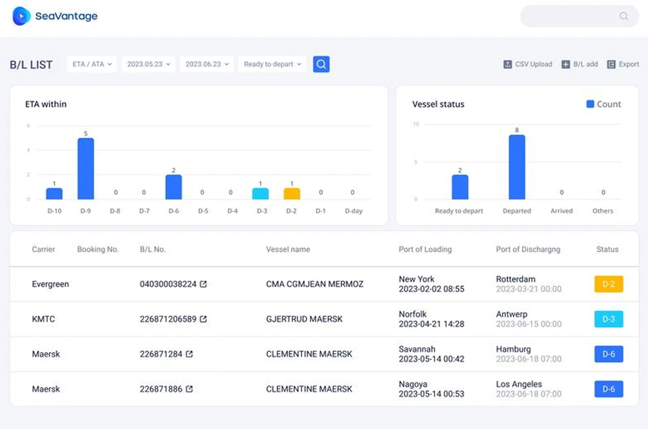

빅테이터 기반의 AI 선박 분석 데이터 기술로
도착시간을 정확히 예측합니다.
-
정확한
도착 시간 예측도착 예정 시간(ETA)대로 내 화물이 도착하는지 확인하고 싶으신가요?
기존의 전형적인 화물 추적을 넘어 AI 분석 기술을 활용한
PTA(Predicted Time of Arrival)를 통해 도착시간을
정확하게 예측합니다. -
실시간
선박 조회B/L 및 컨테이너와 연관된 선박들의 실시간 위치와
운항 상태정보를 제공하며,
Direct shipment 및 Transhipment 등 화물을 기준으로
화물의 전체 여정을 하나의 지도 화면에서 확인할 수 있습니다. -

화물 정보를
한 곳에서 관리여러 선사에서 발행한 B/L을
하나의 플랫폼에서 확인 및 관리할 수 있어
업무 효율이 향상됩니다. -
손쉬운
API 연계씨벤티지가 제공하는
모든 데이터와 기능들은 API로 구현되어 있어
기존 시스템과 손쉽게 연동하여 사용하실 수 있습니다.
씨벤티지와 스마트 물류를
시작하세요!
-
업무 생산성
해상 운송에서 빈번하게 발생하는 예외 사항에 대비하기 위해 화물마다 반복적으로 확인하는 시간을 획기적으로 줄일 수 있습니다.
-
고객 만족도 향상
화주들이 자주 묻는 질문에 대한 정보를 하나의 플랫폼에서 빠르게 제공하여 보다 스마트하게 대응할 수 있습니다.
-
물류 비용 관리
컨테이너 단위의 추적 정보를 통해 Demurrage, Detention 관리에 필요한 정보를 제공하여 물류 비용을 절감할 수 있습니다.